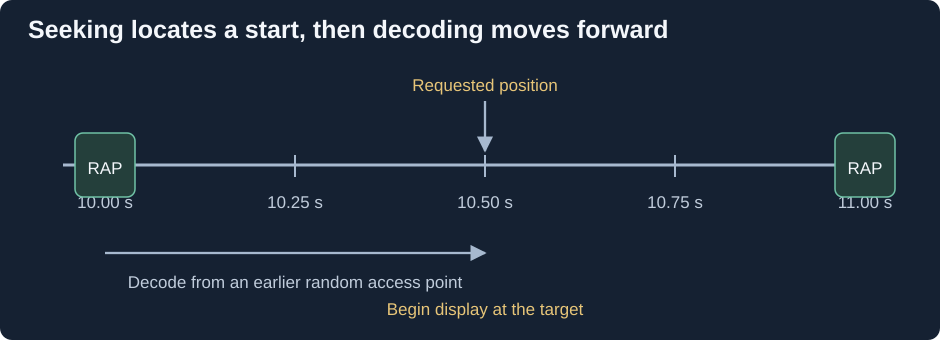

Container Indexes and Seeking
Moving a playback slider to 10 minutes asks a time question. The file is stored as bytes. A container index helps the player translate between those two views.
Without useful navigation information, the reader may have to scan data to find a suitable position. An index can shorten that search, especially for large files or remote storage.

Simplified timeline. Exact seeking behavior depends on the codec, index, and player.
Finding bytes is only the first step
Compressed video often needs earlier reference pictures. The player therefore commonly seeks to a suitable random access point, then decodes forward to the requested moment. The index cannot make every picture independently decodable.
In Matroska, Cues provide timestamp-to-cluster references, and the specification recommends referencing video keyframes. Other containers use their own tables or indexes.
An Emby seek can involve several delays: locating data, reading it from storage, obtaining network bytes, and restarting decoding or a server conversion. A slow jump is not enough by itself to identify which stage is responsible.
Compare a file that starts normally but seeks poorly with one that is slow in both cases. Missing indexes can be rebuilt by a suitable remux when the media remains readable; damaged encoded pictures require a different response.
Chapter markers give named destinations on the timeline. They are navigation labels, not a substitute for the container's means of locating and decoding the requested media.